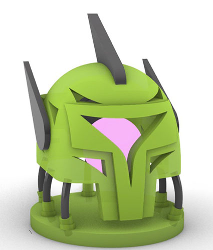

The Helmet
Spring 2024
Rhino 3D, PLA
Challenge: Model a lamp utilizing Rhino 3d, and recreate that lamp in real life using 3d printing and wooden reed.
Process: Starting out, I did roughs for several different types of lamps to explore different ideas and ways to use the provided materials. Once I had some ideas that I liked I decided to do some more detailed pen drawings that properly mapped out which materials I would use for each lamp. Ultimately I decided to got with the circled lamp below because I enjoyed the concept of it the most.
Design I Chose
Other Designs
After deciding on the idea for my lamp, I decided to go into Rhino 3d to create several digital prototypes. Starting, I designed the lamp as a handheld lamp, but after considering the available materials, I decided to make it into a desk lamp instead and streamlined the design accordingly to make it easier to 3d print.
Early Models
Final Model
Once the digital model was finalized, I went straight into the production of the lamp. The materials used included translucent pla plastic, laser-cut wood, and a round reed with a circular bend. Eventually, I incorporated a color-changing LED light bulb into the design to pair with the translucent plastic.
I did run into some issues with production. The first was with getting the reed to fit in the base of the lamp which lead to the creation bushings to support them. The head of the lamp also had to be split into 5 separate parts that all had to be glued together and have a matching infill pattern which resulted in some parts needing a reprint
Once all the pieces were put together, the model was complete. Overall, I feel the color-changing LED complements the translucent filament really well. In the future, I would like to simplify the scale of the top half of the model to make it so it would take less glue to be constructed, as well as introduce modular elements to the design.